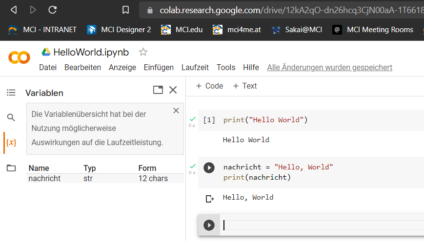
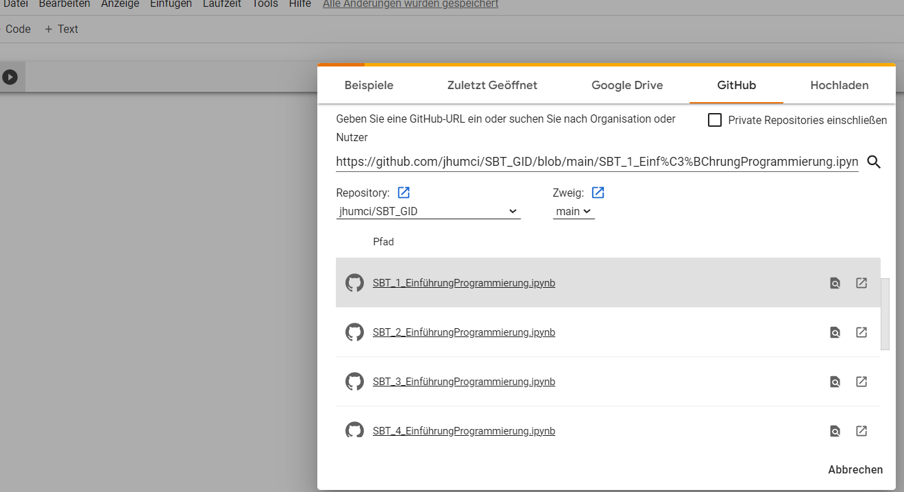

Bio-Informatik
Philosophie der Lehrveranstaltung
nobody has to program [...] everybody in the world is now a programmer
- Tatsächlich erleichtern Werkzeuge wie ChatGPT und GitHub Copilot das Programmieren heute schon enorm und werden in Zukunft noch besser
- Aktuell ist es jedoch noch so, dass interessante Ergebnisse nur durch die Kombination von Fachwissen und Programmierkenntnissen erzielt werden können
- Nie war er so einfach, wie heute programmieren zu lernen:
- KI-Programme helfen bei der Fehlersuche
- KI-Programme antworten auf fragen
- KI-Programme schreiben Code (was bedeutet, dass wir uns einen großteil der Vokabel Lernens sparen können)
- Investieren Sie ein paar Stunden in die die Grundlagen des Programmierens und Sie werden bis zur KI-Apokalypse gut gerüstet sein
Organisatorisches
- Der wichtigste Skill, den Sie in diesem Kurs lernen können, ist das selbstständige Lernen
- Entsprechend ist der Kurs so aufgebaut, dass Sie sich die Grundlagen des Programmierens selbstständig aneignen
- Nutzen Sie Google, Stackoverflow, ChatGPT, GitHub und andere Quellen, um sich die Grundlagen des Programmierens anzueignen
- Fragen Sie jederzeit, wenn Sie nicht weiterkommen, dies ist die schnellste und effektivste Methode, um weiterzukommen
- zum bestehen des Kurses müssen alle Notebooks bearbeitet und mit den Lösungen abgegeben werden
- die Musterlösungen sind in den Notebooks enthalten, versuchen Sie dennoch die Aufgaben selbst zu lösen
- Für Fehler gibt es hierbei keinen Abzug
- Sollten Notebook kopiert werden und nur umbenannt abgegeben werden, wird dies als Täuschungsversuch gewertet
- Im Anschluss wird ein Projekt in Zweier-Gruppen bearbeitet
- Am zweiten Tag steht Zeit zur Bearbeitung des Projektes zur Verfügung
- Das Projekt wird im zweier-Team bearbeitet und ergibt die End-Note für den Teil des Kurs
- Das folgende Skript entspricht 1:1 dem Inhalt der Notebooks
Juypter Notebooks
- für die LV arbeiten mit interaktiven Notebooks, die Ihnen hier zur Verfügung stehen
- Sie erkennen die Dateien an der Endung
*.ipynb - der Code kann über Zellen im Browser eingegeben werden

✍️ Aufgabe
- Sofern Sie einen Google-Account Nutzen, können Sie die Google-Colab Umgebung nutzen, um mit den Notebooks zu arbeiten
- der Code wird auf Servern von Google kompiliert
- die Ausgabe erfolgt unter der jeweiligen Zelle
- gespeicherte Zwischenergebnisse bleiben in Ihrem Account erhalten
- Legen Sie einen neues Notebook auf Google-Colab an und geben Sie den folgenden Befehl ein:
print("Hello, Word!")
Ohne Google Account
- Unter folgenden Link können Sie die Notebooks ebenfalls ausführen. Allerdings gibt es hier keine komfortable Möglichkeit Ihre Ergebnisse zu speichern

- Alternativ können Sie die Notebooks lokal ausführen indem Sie das Paket Anaconda installieren

Öffnen eines bestehenden Notebooks
 : Laden Sie auf Github die
: Laden Sie auf Github die *.ipynb-Datei herunter und merken Sie sich den Speicherort


- Wählen Sie im Menü:
Datei/Notebook öffnen/ - Im öffnenden Fenster:
GitHub, das Pop-Up zur Anmeldung bei GiHub können Sie abbrechen - Fügen Sie den Link zur Datei ein, die Sie öffnen möchten: z.B.
https://github.com/jhumci/2024_SoSe_BioInformatik/blob/main/docs/1_variablen_und_operationen.ipynb - Wählen Sie die genaue Datei aus
- Speichern Sie eine Kopie über
Datei/Speichern/

Herunterladen eines bestehenden Notebooks
- Stellen Sie zunächst sicher, dass alles fehlerfrei läuft und die Ergebnisse wie gewünscht vorliegen
- Wählen Sie hier im Menü:
Laufzeit/Alle Ausführen - Nun können Sie das Notebook herunterladen
- Wählen Sie im Menü:
Datei/Herunterladen/ipynb